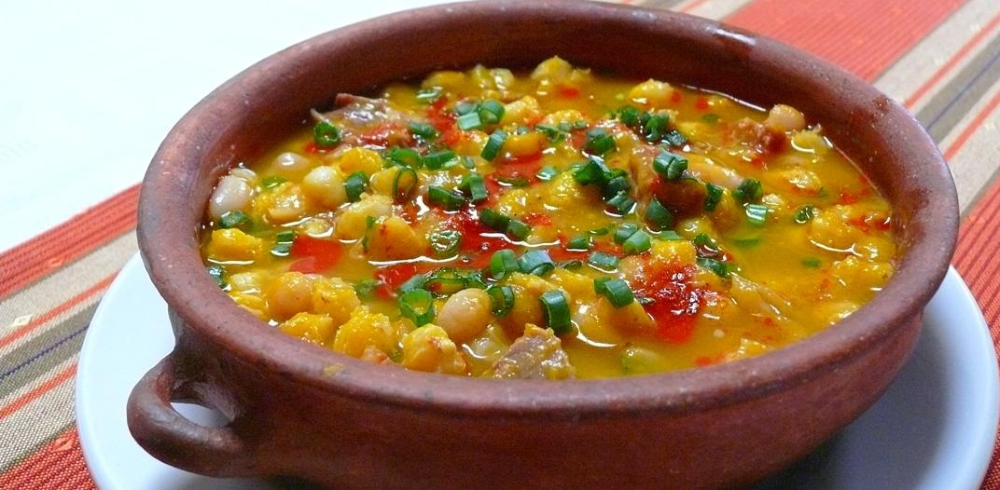
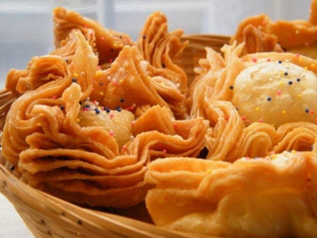

Locro, el guiso andino
Ingreso: 09/06/2018

De qué se trata:
El locro es un guiso a base de zapallo, poroto, maíz y/o papas que se consume en la zona de la cordillera de los Andes, desde Argentina y el norte de Chile, hasta el suroccidente de Colombia, pasando por Bolivia, Ecuador, Paraguay y Perú.
Ingredientes:
Zapallo, porotos, maíz o papas. Carnes
Pastelitos, el postre argentino
Ingreso: 25/05/2018

De qué se trata:
Los pastelitos criollos argentinos, o simplemente "pastelitos" son un típico postre argentino con una forma que recuerda a la de una flor de rosa, los cuales son tradición comer el día 25 de mayo y el 9 de Julio.
Ingredientes:
Harina, aceite, dulce de membrillo o batata.